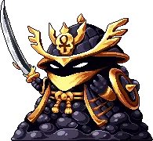

Obols는 World 2부터 캐릭터에게 소소한 전투·스킬링 보너스를 제공합니다. 이 가이드는 Obols 해금 방법, 기본 메커니즘, 특정 Obol 파밍 위치, 그리고 상황별 최선의 Obol에 대한 정보를 담고 있습니다.
신규 플레이어는 처음에 파밀리 탭에 찾은 Obol을 아무거나 배치하고, 이후 캐릭터에 관련된 스탯·스킬 Obol을 추가하는 것을 권장합니다. 진행이 어느 정도 이루어지면 모든 캐릭터와 파밀리 탭을 드롭률 Obol로 가득 채우는 것을 권장합니다. 드롭률은 광범위한 효과를 가지며 Obol 파밍 시간을 크게 단축시킵니다.
Obol 기초 – 해금 방법 & Obol 슬롯
Obols 해금
World 2 상점에서 BobJoePickle을 구매한 뒤, World 3 포탈 근처에 있는 Obol Altar에 앉아 있는 고양이를 놀라게 하면 Obols를 해금할 수 있습니다. 실제로 Obols가 드롭되려면 먼저 W2 공로 상점(Merit Shop) 업그레이드를 구매해야 합니다.
Obol 슬롯 해금
Obol 슬롯은 캐릭터 레벨이나 계정 레벨에 따라 자동으로 해금됩니다. 개인 Obol 슬롯의 마지막은 클래스 레벨 250에서, 파밀리 Obol의 마지막은 계정 합산 레벨 5,000에서 해금됩니다.
개인 Obol과 파밀리 Obol
개인 Obol 탭은 캐릭터마다 별개로 존재하며, 여기에 배치된 Obol은 해당 캐릭터에게만 스탯을 제공합니다. 파밀리 Obol 탭은 모든 캐릭터에게 적용되므로 초기에는 파밀리 탭 채우기에 집중하는 것이 이상적입니다. 각 탭의 총 스탯은 Obol UI의 합계 보너스 화면에서 확인할 수 있습니다.
Obol 드롭 소스
"Obols는 자원 노드와 몬스터(Active(직접 플레이) 및 AFK(방치))에서 드롭되지만, AFK 세션당 최대 Obol 드롭은 1개"입니다. 세션 길이와 무관하게 이 제한이 적용됩니다.
Obol 리롤 & 합성 (업그레이드)
Obol UI의 업그레이드 섹션에서 Obol의 스탯을 리롤하거나, 동일한 두 Obol을 합성해 더 높은 희귀도의 Obol로 만들 수 있습니다. 두 작업 모두 Obol을 파괴하거나 World 2 아케이드 보상에서 얻을 수 있는 Obol Fragments가 필요합니다.
리롤은 Obol의 기타 보너스 스탯(예: 드롭률)을 1씩 높이는 데 사용하고, 업그레이드(합성)는 최고 등급 Obol을 얻는 유일한 방법입니다. 리롤 시에는 왼쪽의 Obol 스탯이 기준점으로 사용됩니다.
Obol 최고의 빌드 – 드롭률
다양한 Obol 유형이 있지만 보너스가 상대적으로 작고 다른 빌드를 파밍하는 데는 상당한 시간이 들 수 있습니다. 이 때문에 모든 파밀리 및 개인 슬롯을 드롭률 Obol로 채울 것을 권장합니다. 이 드롭률 Obol을 언제 파밍할지는 현재 드롭률 및 다른 계정 우선순위에 따라 다르지만, 파밀리 탭부터 채우고 개인 슬롯은 비교적 쉬워지는 World 4 이후 채워 나가세요. World 4에서는 Elemental Sorcerer와 Divine Knight 클래스와 Laboratory Chocolatey Chip을 이용한 크리스탈 몬스터 파밍 빌드가 가능해집니다.

| Obol 슬롯 | Obol 유형 | 드롭 소스 | 비고 |
|---|---|---|---|
| 원형(Circle) | Silver Obol of Pop Pop | Gigafrog | Gigafrog에서 브론즈를 얻은 뒤 드롭률 +1%(3%)을 위해 리롤한 다음, 이 Obol을 합성 창 왼쪽에 놓고 리롤하지 않은 브론즈와 합성하세요. 결과물인 실버 Obol의 드롭률은 4%이며, 브론즈 리롤이 더 저렴합니다. 가장 좋은 파밍 방법은 Active Elemental Sorcerer를 이용하는 것입니다. |
| 사각형(Square) | Golden Obol of Triple Sixes 또는 Vigilant Obol of Ice Guard | Crystal Crabal 또는 Glacial Guild | World 2 몬스터에서 실버를 얻은 후 위의 원형과 같은 리롤/업그레이드 과정을 따르세요. 가장 좋은 파밍 옵션은 Divine Knight Active 크리스탈 빌드입니다. 무작위 이벤트에서 나오는 Ice Guard Obol은 리롤 시 드롭률 +1%를 더 제공합니다. |
| 육각형(Hexagon) | Platinum Obol of Yahtzee Sixes 또는 Magma Obol of Big Time Domeo | Crystal Crabal 또는 Domeo Magmus | 위의 골드 사각형을 합성해서 만듭니다. World 5 미니 보스(Domeo Magmus) 전투에서 얻은 Obol은 리롤 시 드롭률 +4%를 제공합니다. |
| 별형(Sparkle) | Dementia Obol of Infinisixes 또는 Molten Obol of Dead Divine | Crystal Crabal 또는 Kattlekruk | 위의 육각형을 합성해서 만듭니다. World 5 보스(Kattlekruk) 전투에서 얻을 수 있습니다. 이 Obol은 드롭률을 제공하지 않지만, 리롤 전 AFK 획득량(5%)은 많은 상황에서 유사하게 유용합니다. |
Gem Shop의 프리미엄 드롭률 Obols에 접근할 수 있다면 위의 원형·사각형 Obol을 대체할 수 있습니다.
Obol 스킬링 빌드
드롭률 Obols 외에 권장하는 유일한 대안은 스킬링 Obol 세트입니다(채광, 나무 베기, 낚시, 채집, 함정, 경배). 이들은 스킬링 효율을 실제로 높여주지만, 대부분의 플레이어에게는 완전한 세트를 파밍하는 데 드는 시간 대비 이점이 크지 않습니다. 이 Obol들 중 상당수는 Alchemy Shop의 액체를 사용해야만 얻을 수 있으며, 그 액체는 연금술 업그레이드에 쓰는 것이 더 낫습니다.
하지만 극한의 최적화를 추구하는 플레이어를 위해, 아래는 각 스킬링 원형 Obol의 입수처입니다. 필요에 따라 실버 원형이나 골드 사각형으로 업그레이드할 수 있습니다.
| Obol 유형 | 드롭 소스 |
|---|---|
| Bronze Obol of Small Swings (채광) | Alchemy Shop – Mediocre Obols |
| Silver Obol of Moderate Mining | Alchemy Shop – Decent Obols |
| Bronze Obol of Chippin Chops (나무 베기) | Alchemy Shop – Mediocre Obols |
| Silver Obol of Big Bark (나무 베기) | Alchemy Shop – Decent Obols |
| Bronze Obol of Finite Fish (낚시) | Alchemy Shop – Decent Obols |
| Silver Obol of Puny Pikes (낚시) | Alchemy Shop – Decent Obols |
| Bronze Obol of Few Flies (채집) | Alchemy Shop – Decent Obols |
| Silver Obol of Big Bugs (채집) | Alchemy Shop – Decent Obols |
| Bronze Obol of Trapping (함정) | Alchemy Shop – Grand Obols 또는 World 3 몬스터 (Bloque, Mamooth, Showman, Penguin, Thermister, Chizoar, Crystal Cattle). Divine Knight 크리스탈 빌드로 파밍. |
| Silver Obol of Trapping (함정) | Alchemy Shop – Grand Obols 또는 World 3 몬스터 (위와 동일). Divine Knight 크리스탈 빌드로 파밍. |
| Bronze Obol of Worship (경배) | Alchemy Shop – Grand Obols 또는 World 3 몬스터 (Sheepie, Frost Flake, Sir Stache, Chizoar, Crystal Cattle). Divine Knight 크리스탈 빌드로 파밍. |
| Silver Obol of Worship (경배) | Alchemy Shop – Grand Obols 또는 World 3 몬스터 (위와 동일). Divine Knight 크리스탈 빌드로 파밍. |
위 Obol들과 함께 가능하면 아래의 육각형·별형 스킬링 Obol도 조합하세요.

| Obol 유형 | 드롭 소스 |
|---|---|
| Slushy Obol of Much Dilapidation | World 3 미니 보스 (Dilapidated Slush) |
| Molten Obol of Dead Divine | World 5 보스 (Kattlekruk) |
| Gilded Obol of the Emperor | World 6 보스 (Emperor) |